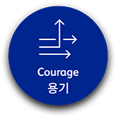
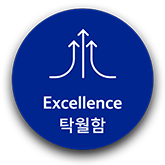
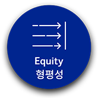
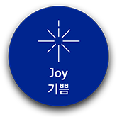

.png)
- HOME
- 회사소개
기업 소개
한국화이자제약은 국내 제약업계를 선도하며 지역 사회 발전에 기여하기 위해 끊임없이 노력하고 있습니다.
화이자의 한국 법인인 한국화이자제약은 1969년 설립 이후 선진화된 연구개발 실적과 첨단 기술을 바탕으로 '환자들의 삶을 변화시키는 혁신(Breakthroughs that Change Patients' Lives)'이라는 기업 목표를
실현하기 위해 혁신적인 치료제와 백신 분야에서 우수한 제품을 제공하고 있으며, 이를 통해 국민건강 증진 및 국내 의약업계 발전에 기여하고 있습니다.
나아가 한국화이자제약은 책임감 있는 기업시민으로서 '지역사회 발전 기여'를 기업의 중요한 가치로 삼고 다양한 사회공헌 프로그램을 지속적으로 진행하고 있습니다.
한국화이자제약은 '책임 있는 기업 시민'으로 나아가기 위한 중요 가치 중 하나로 '정직'을 내세우고 있으며 직원 모두는 법적, 윤리적으로 투명한 경영을 위해 노력하고 있습니다.
더불어 회사 최고의 자산은 '사람'이라는 생각을 바탕으로 회사가 추구하는 가치를 공유할 수 있는 인재를 등용, 함께 성장 발전하고자 노력하고 있습니다.
연구개발을 통한 의학 발전에 기여
한국화이자제약은 국내 시장에 혁신적인 신약을 공급하여 환자와 한국 국민이 보다 건강한 삶을 누릴 수 있도록 노력해왔으며, 다양한 연구개발 프로그램을 통한 기초 연구 협력 및 R&D 기술 정보 교류를
다각적으로 진행해 국내 연구개발 인력 양성과 국내 임상 인프라 강화에 기여하고 있습니다.
책임감 있는 기업시민으로서 지역사회 발전에 기여
한국화이자제약은 누구나 더불어 건강하고 행복한 삶을 누릴 수 있는 사회 구현을 목표로 다양한 사회공헌 프로그램을 운영, ‘지역 사회 기여’라는 회사의 핵심가치를 실천하고 있습니다.
이와 같은 사회 공헌 활동을 통해 한국 사회가 추구하는 가치를 공유하고 그 책임을 나누고자 끊임없이 노력하고 있습니다.
일하기 좋은 기업, 한국화이자제약
한국화이자제약은 직원들이 회사의 핵심 자산이고 회사의 발전은 우수한 인재에 대한 투자를 통해 이루어진다고 믿고 있으며, 자기 개발에 적극적인 인재를 발굴 및 육성하고 있습니다.
또한, 남녀기회균등과 평등한 고용 기회를 제공하고 일∙ 가정 균형을 위한 가족 친화적인 직장 환경을 조성하는 데에 다양한 노력을 기울이고 있습니다.
그 결과, 2009, 2015, 2020년에 UNICEF 엄마에게 친근한 일터, 2011년에는 남녀고용평등 우수기업 대통령 표창, 2015년에는 Job Planet의 일하기 좋은 한국기업으로 선정, 2020년에는 여성가족부의
가족친화 인증을 받은 바 있습니다. 이 외에도 KOR D&I Group운영을 통한 다양성과 포용의 문화를 조성하여, 모든 직원들이 일하기 좋은 직장으로 만들어 가고 있습니다.
회사 경영의 투명한 절차와 엄격한 윤리 기준 적용
한국화이자제약은 회사 경영 및 운영 전반에 걸쳐 투명한 절차와 엄격한 윤리기준을 적용하고 있으며, 임직원 모두가 이를 함께 성실히 실천해나가고 있습니다.
한국화이자제약은 2005년 ‘투명사회실천협약’에 가입하여 윤리경영을 위한 노력에 앞장서고 있으며 정직한 업무 수행 기준을 준수하고 있습니다.
- HOME
- 회사소개
연혁
Pfizer in Korea
|
1969 |
화이자와 중앙제약㈜이 합작, 한국화이자로 상호 변경 |
|
1985 |
생산시설 완비 및 보건사회부로부터 KGMP(우수 의약품 제조 기준) 인가 획득 |
|
1998 |
화이자 본사, 중앙제약 합작지분 인수 및 ‘한국화이자제약주식회사’로 상호 변경 |
|
1999 |
대한의학협회와 함께 ‘화이자의학상’ 제정 |
|
2000 |
워너-램버트 인수 |
|
2001 |
화이자 글로벌 연구개발 그룹(PGRD)에서 다국가 임상 연구에 한국 포함 |
|
2002 |
대표적 사회공헌 프로그램인 ‘화이자 사랑의 병원 그림 축제’ 캠페인 출범 ‘화이자 사랑의 장학금’ 출범 |
|
2003 |
파마시아 인수 ‘화이자 사랑의 장학금’ 통해 의대 및 일반대학생에게 장학금 전달 |
|
2004 |
전직원이 참여하는 사회공헌 프로그램, ‘화이자 사랑의 나눔장터’ 개최 |
|
2006 |
‘대한의사협회-화이자 국제협력특별공로상’ 제정 |
|
2007 |
서울시 중구 회현동 1-11번지 화이자타워로 사옥 이전 |
|
2008 |
화이자 아시아 R&D 전략적 제휴 설명회 개최 |
|
2009 |
한국화이자제약 대표이사, 이동수 전 마케팅 전무 선임 |
|
2010 |
한국화이자제약, 한국와이어스와 통합 운영 선포 |
|
2011 |
한국화이자제약 이동수 대표이사 사장, KRPIA 신임 회장으로 선출 |
|
2012 |
한국화이자제약, 국내 4개 병원과 INSPIRE에 관한 양해각서 체결 |
|
2013 |
이동수 대표이사 사장, 보건복지부 대통령 표창 수상 |
|
2015 |
화이자제약-호스피라 인수 합병 |
|
2016 |
행정자치부 주관 '2016 대한민국자원봉사대상 – 국무총리상' |
|
2017 |
코리아헤럴드 주관 '2017 대한민국 보건의료대상 헤럴드경제 대표이사상' 수상 |
|
2019 |
한국화이자 법인 재편: Biopharmaceuticals Group 사업부문 |
|
2020 |
한국화이자업존 글로벌 'Viatris'㈜(Viatris Inc.) 소속으로 변경 |
- HOME
- 회사소개
비전 및 미션
Breakthroughs that Change Patients' Lives
한국화이자제약은 '환자들의 삶을 변화시키는 혁신(Breakthroughs that Change Patients' Lives)' 이라는 기업 목표를 실현하기 위해 아래와 같은 주요 미션과 기업 가치를 세워 실천해 나아가고 있습니다.
기업 미션 (OUR BOLD MOVES)
Unleash the Power of Our people
우리는 인재의 잠재력을 이끌어내어 최고의 리더를 육성하는 회사가 될 것입니다.
우리는 효율적이고 의미있는 업무 환경을 만들어 나갈 것이며, 직원의 리더십과 성과를 드높이고 함께 나눌 수 있는 문화를 잃지 않을 것입니다.
이를 바탕으로 한국화이자제약은 모두에게 일하기 좋은 기업을 추구합니다.
Deliver First-in-Class Science
우리는 항상 환자의 입장에서 생각합니다. 끊임없는 연구 개발로 혁신 성공률을 높여 환자들이 필요한 신약을 빠르게 공급하고, 개발하고, 이를 바탕으로 제약업계를 선도하고 있습니다.
Transform Our Go-to-Market Model
우리는 Go-to-Market 전략을 새롭게 세워 새로운 Payer Partnership을 통해 치료 접근성을 강화할 것이며, 환자의 치료 비용 부담에 대한 과제를 풀어나갈 것입니다.
Win the Digital Race in Pharma
우리는 디지털 기반의 신약 후보물질 탐색 및 개발을 통해 R&D 속도 및 편의성을 향상하며, 긍정적인 치료 결과와 환자 경험을 위해 노력할 것입니다.
Lead the Conversation
우리는 제약 업계에서 가장 환자중심적인 기업(Patient Centric)으로 자리매김할 것이며, 혁신과 환자를 중심에 둔 정책을 추진해 나아갈 것입니다.
- HOME
- 회사소개
핵심가치
전 세계 화이자제약 직원들은 용기(Courage), 탁월함(Excellence), 형평성(Equity), 기쁨(Joy) 등 4 가지의 가치를 추구하고 있습니다.
-

혁신은 어려움의 불확실성을 직면했을 때
기존의 관습에 도전하는 것으로부터 시작됩니다.
이는 크게 생각하고, 목소리를 내며,
결단력을 가질 때 이루어질 수 있습니다.
-

환자의 삶을 변화시키기 위해서
우리는 함께 최선의 퍼포먼스를 보여야 합니다.
이는 중요한 일에 집중하고, 자신의 역할에 대해 논의하고,
성과를 측정할 때 이루어질 수 있습니다.
-

우리 모두 보여지고, 의견에 귀 기울이며,
돌봄 받을 자격이 있습니다.
이는 우리가 포용력과 진정성을 갖고 헬스케어의
불균형을 줄여나갈 때 이루어질 수 있습니다.
-

우리는 맡은 일에 최선을 다하며,
또 일에서 우리 자신을 찾습니다.
본인이 하는 일에 대해 자부심을 갖고 서로를 인정하며
즐겁게 임할 때, 우리는 기쁨을 찾을 수 있습니다.
- HOME
- 회사소개
윤리경영
정직은 기업의 핵심가치 중 하나로 지역사회 발전에 있어 믿을 수 있는 파트너가 되고자 하는 회사의 신뢰 기반입니다.
한국화이자제약은 회사 경영 및 운영 전반에 걸쳐 투명한 절차와 엄격한 윤리 기준을 적용하고 있으며,
모든 직원과 함께 이를 성실히 실천하고 있습니다.
2005년 ‘투명사회실천협약’에 가입하여 윤리경영을
위한 노력에 앞장서고 있으며, 최근 의료계 전문인을 대상으로 실시한 여론조사에서 공정거래 질서를
가장 잘 지키는 기업으로
선정되는 등 모범적이고 윤리적인 기업으로 인정받고 있습니다.
한국화이자제약과 임직원은 회사의 가치, 정책 및 관련 법률을 숙지하고 실천하며 합법적이고 투명한
비즈니스 활동을 수행합니다. 윤리적인 시장 경쟁을 주도하며 비즈니스
파트너 및 보건의료전문가,
환자와 정부, 규제 기관 등과의 관계에서도 도덕적이고 책임감 있게 행동합니다. 이 밖에도 기업시민으로서
지역 사회 활동에 적극적으로 참여하고
건강한 사회를 만들어 가는 데에 협력하고 있습니다.